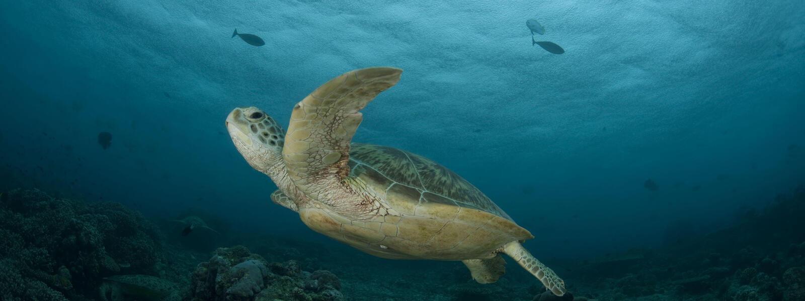
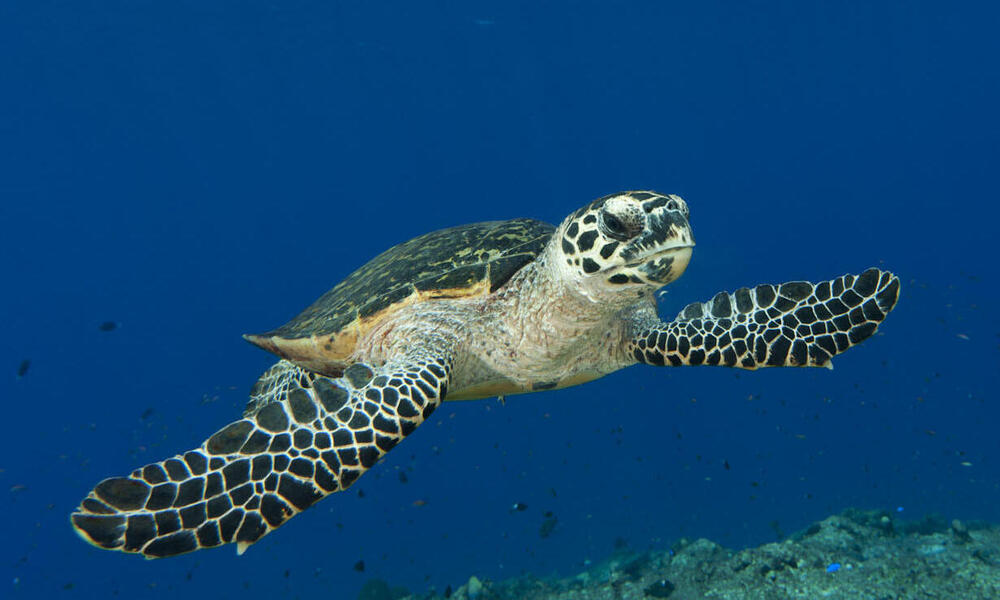
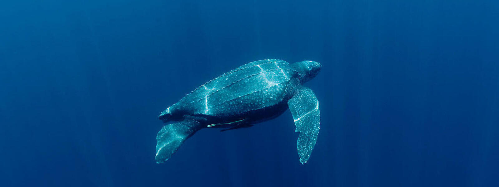

Green Turtle
Green turtles are one of the largest sea turtles and the only herbivore. They are found mainly in tropical and subtropical waters and migrate long distances between feeding grounds and the beaches from where they hatched. They are threatened by overharvesting of their eggs, hunting of adults, being caught in fishing gear and loss of nesting beach sites. They graze on seagrasses and algae, which maintains the seagrass beds and makes them more productive. Seagrass beds also function as nurseries for several species of invertebrates and fish. Green turtles are found in tropical and subtropical waters and migrate long distances between feeding grounds and beaches from where they hatched. They are endangered due to overharvesting, hunting, fishing gear, and loss of nesting beach sites. They graze on seagrasses and algae, which are quickly digested and become available as recycled nutrients. Seagrass beds also function as nurseries for several species of invertebrates and fish, which are important to commercial fisheries and human food security.
Hawksbill Turtle
Hawksbills are named for their narrow, pointed beak. They also have a distinctive pattern of overlapping scales on their shells that form a serrated-look on the edges. These colored and patterned shells make them highly-valuable and commonly sold as "tortoiseshell" in markets. Hawksbills are found mainly throughout the world's tropical oceans, predominantly in coral reefs. They feed mainly on sponges by using their narrow pointed beaks to extract them from crevices on the reef, but also eat sea anemones and jellyfish. Sea turtles are the living representatives of a group of reptiles that has existed on Earth and travelled our seas for the last 100 million years. They are a fundamental link in marine ecosystems and help maintain the health of coral reefs and sea grass beds.
Loggerhead Turtle

The enormous heads of loggerhead turtles support strong jaw muscles that enable them to crush hard-shelled prey like clams and sea urchins, hence the name of the species. Compared to other sea turtles, they are less likely to be killed for their meat or shell. Because loggerhead turtles commonly interact with fisheries, bycatch, or the unintentional capture of marine animals in fishing gear, is a significant issue for them. The most prevalent type of turtle in the Mediterranean is the loggerhead, which breeds on beaches from Greece and Turkey to Israel and Libya. Development of the tourism industry has put many of their nesting beaches in danger. The only surviving members of a group of reptiles that have roamed our oceans for the past 100 million years are sea turtles
Leatherback Turtle
Leatherback turtles are named for their shell, which is leather-like rather than hard, like other turtles.
They are the largest sea turtle species and also one of the most migratory, crossing both the Atlantic and Pacific Oceans. Pacific leatherbacks migrate from nesting beaches in the Coral Triangle all the way to the California coast to feed on the abundant jellyfish every summer and fall.
Although their distribution is wide, numbers of leatherback turtles have seriously declined during the last century as a result of intense egg collection and fisheries bycatch. Globally, leatherback status according to IUCN is listed as Vulnerable, but many subpopulations (such as in the Pacific and Southwest Atlantic) are Critically Endangered.

 Seagrass consumed by green turtles is quickly digested and becomes available as recycled nutrients to the many species of plants and animals that live in the sea grass ecosystem.
Seagrass consumed by green turtles is quickly digested and becomes available as recycled nutrients to the many species of plants and animals that live in the sea grass ecosystem.